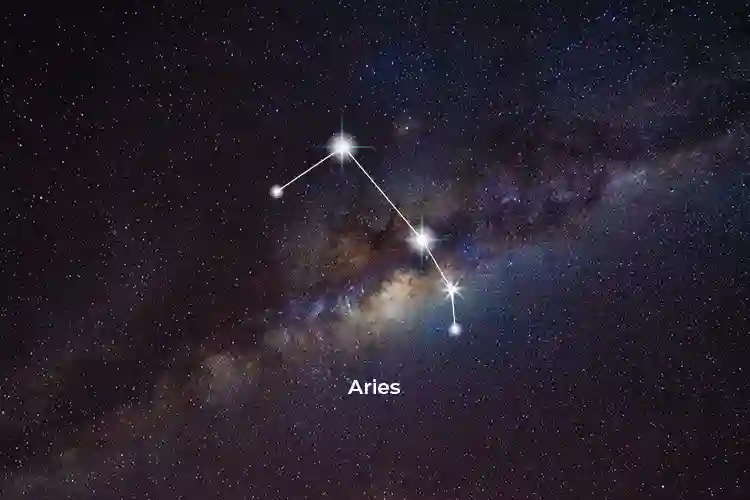

Aries
March 21 - April 19
The Cardinal Fire
Ruling Planet
Mars 🔥
Elemental Traits
Pioneering Spirit • Bold Initiative • Competitive Edge
Celestial Forge
Symbol: Ram's Horn
Stone: Bloodstone
The primordial spark of creation; Aries bursts forth with dynamic energy and fearless determination. A sign of leadership and constant renewal.
Stellar Exemplars
Leonardo da Vinci • Lady Gaga • Robert Downey Jr.